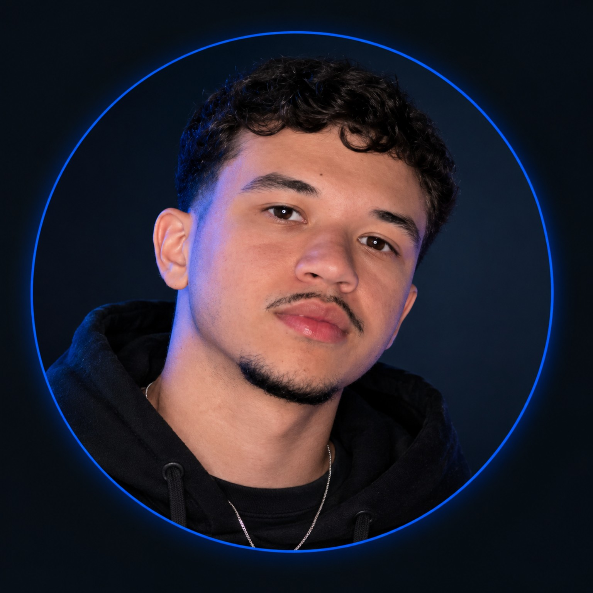

sorriso
sorriso
Equipe do projeto
Uma ideia. Atenção em cada detalhe.
Desenvolvimento individual para o Challenge Turma do Bem, com foco na captação e no relacionamento com apoiadores.
Responsabilidades nesta sprint
Definição e planejamento
Problema, proposta, regras de negócio, backlog e pitch.
Protótipos e modelos
Interface HTML/CSS, Python, classes UML, dados conceituais e chatbot.
Verificação e apresentação
Revisar os materiais, testar os fluxos e demonstrar o funcionamento.